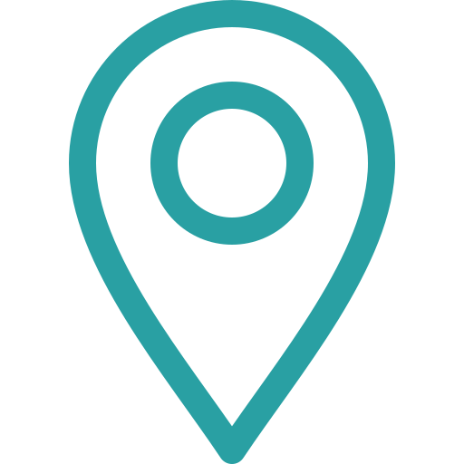

University Lost & Found Platform
Lost Something
on Campus? We'll
Help You Find It
on Campus? We'll
Help You Find It
UniLost connects students and staff to help reunite lost items with their owners.
Report what you've lost or found, and let the community help.


Found or Lost Something?
Sign in to post items and help reunite belongings with their owners.
+ Get Started